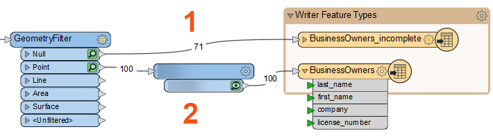
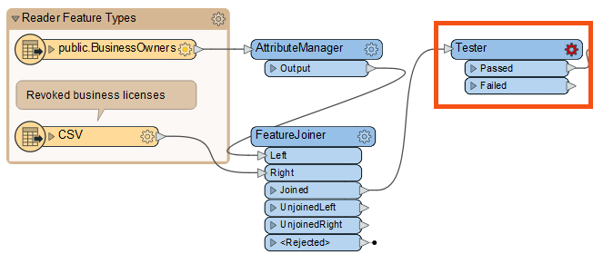
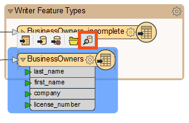

The name of the transformer in stream #2 above is obscured because it is the answer to a previous quiz question.
After completing this lesson, you’ll be able to:
FME workspaces send data from left to right across the canvas from reader feature types to writer feature types. The simplest workspace only has one “stream” of data: features are read in, all processed in the same way, and then written out. However, workspaces can have multiple data streams, splitting and merging features as required.
The GeometryFilter created multiple streams in Jennifer's workspace when it split the PostGIS features into point and null geometry. She now has two streams from the GeometryFilter: #1 contains features missing geometry going to the BusinessOwners_incomplete feature type, and #2 contains point geometry features going to the BusinessOwners feature type.

The name of the transformer in stream #2 above is obscured because it is the answer to a previous quiz question.
Jennifer has been given a CSV file with a list of business license numbers flagged to be revoked. She wants to use this list to filter out features with revoked licenses from her source data before writing to the geodatabase.
You don’t have to follow along with Jennifer here. We provide a starting workspace below to let you skip this step. It’s a bit more advanced. If you want to learn more about the FeatureJoiner, you can read this tutorial.
Jennifer adds a CSV reader and reads the revoked licenses file. She then uses a FeatureJoiner to join the revoked license data to her existing BusinessOwners data. Now her features have a “revoked_license” attribute that can filter out the businesses with revoked licenses.
You can follow along with Jennifer now using this starting workspace in FME Workbench (2023.0 or later).
If you are taking a Safe Software-hosted training course, the database connection in this workspace should work automatically.
If you configured a database connection yourself in a previous exercise, you'll have to edit the PostGIS reader parameters to use your connection. Find the PostGIS reader in the Navigator (it's the first entry), expand its parameters, double-click Connection, and choose the database connection you configured.
If you have not yet configured a database connection, refer to the instructions in the earlier lesson, Quickly Create a Conversion Workflow, to do so.
Jennifer adds a Tester between the FeatureJoiner and the GeometryFilter using Quick Add so she can filter out the stream of data to get all businesses with valid licenses only.

We are filtering our features into two streams with the Tester. Other transformers with “Filter” in their name can route features into more than three streams based on various operations, for example, the TestFilter.
To do this, she double-clicks the Tester to open its Parameters dialog. The table here allows her to enter a logical test or series of tests against incoming features. It works a bit like an “if-then-else” statement in programming languages. If the feature meets the test(s) criteria, it comes out of the Passed port. If it does not, it comes out of the Failed port. The Tester filters data and allows for simple branching of your data integration workflow.
Jennifer sets up her Tester as follows:
| Logic | Left Value | Operator | Right Value |
| NOT | 🠈 revoked_license | Attribute Has a Value | <Unused> |
These settings do the following: “For each feature being read by the Tester, if it does NOT have a value for the attribute 'revoked_license,' it passes. Otherwise, it fails.” This test accomplishes our goal of sending any features with a revoked license to the Failed port.
We used the NOT Logic operator in this example. You can combine different Logic operators like OR or AND for more complex tests.
See the Tester documentation for more information.
Jennifer uses Run to This on the Tester and sees 167 results out of the Passed port and four out of the Failed port.
Jennifer inspects the Tester cache to ensure the correct features are filtered out. She clicks the Tester's Failed feature cache. She sees Visual Preview’s Table View reporting in the bottom-right corner that 4 rows are being displayed, meaning the four revoked licenses have been filtered out successfully via the Failed port.

She can confirm the correct features failed because their “license_number” and “revoked_license” attributes match.
Now that her workspace is complete, Jennifer turns off feature caching from the toolbar (Run > uncheck Enable Feature Caching) and then clicks Run. Her entire workspace runs successfully.
Then she clicks the BusinessOwners writer feature type to select it and clicks View Written Data.

This shows the 96 valid records that were written to this feature class. FME automatically added the required OBJECTID column to the data as required by the geodatabase format.

Using the same method to inspect BusinessOwners_incomplete shows 71 features with missing values.

Jennifer clicks one of the writer feature types and then Open Containing Folder, viewing the geodatabase in her file browser. She can open the geodatabase in ArcCatalog, ArcMap, or ArcGIS Pro from there.

Make sure you have followed along with Jennifer’s steps.
In this course, you learned how to: